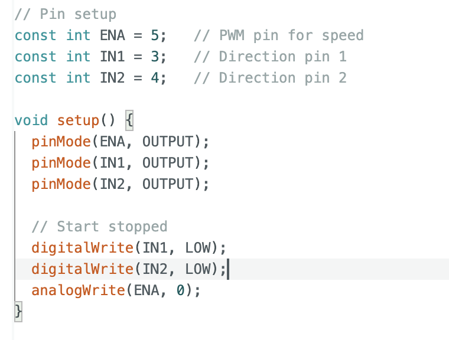
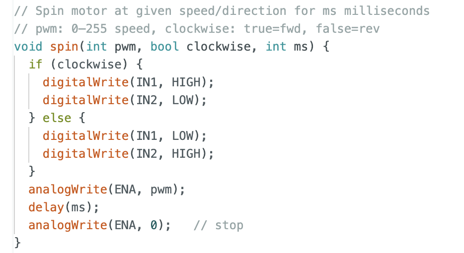
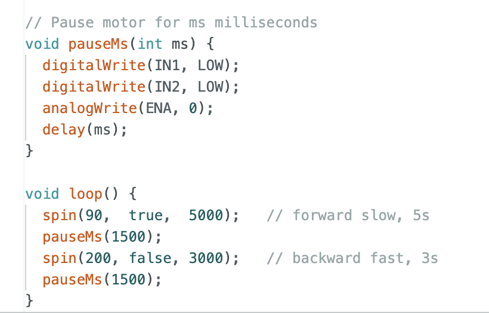
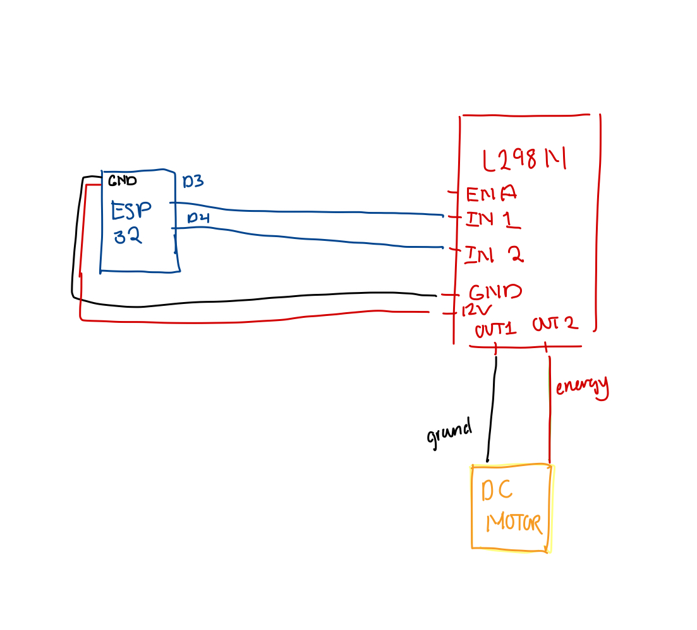

<div class="textcontainer">
<p class="margin"> </p>
<h3>Week 4: Microcontroller Programming</h3>
<h4>[Do Something with an arduino]</h4>
<p>This week, I decided to build onto my project from last week--the spinning flowers--by using Arduino and a ESP32 microcontroller
to change/control the motor's speed according to a coded program. This week's classes and labs were basically the first time I've ever worked with circuits and
electrical engineering of any kind, so it was both really exciting as well as very challenging. Ended up being really cool to see how just an arrangement of wires could
result in a motor spinning or a light turning on with the press of a button.
</p>
<p>I powered the DC motor for my project using the Seeed Studio Xiao ESP32c3 microcontroller on a breadboard connected to an L298N motor drive controller board.
to drive it. I uploaded code that results in the motor spining forward slowly for 5 seconds, pausing, then spinning backward quickly for 3 seconds.
This week helped me learn a lot more about microcontroller programming as well as circuit wiring and working with a L298N.
Attached below is documentation of the code I uploaded with comments explaining the purpose of each function, a circuit diagram for the wiring that I used,
as well as a demo video for my project.</p>
<p></p>
<p></p>
<p></p>
<p></p>
<video src="flower_dance.MOV" style = "width: 65%" controls></video>
</div>